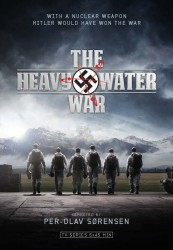

")
Alternativ: The Saboteurs (Englischer Titel)
 
 IMDB-Wertung: 8.1 / 10
IMDB-Wertung: 8.1 / 10  Metascore:
Metascore: 
“Saboteure im Eis - Operation Schweres Wasser” ist ein mitreißendes sechsteiliges Weltkriegs-Drama, das davon erzählt, wie die Alliierten versuchten, Hitlers Bau einer Atombombe in der norwegischen Telemark zu stoppen. Die Geschichte folgt den Sabotageaktionen und erzählt, was in den Kriegsjahren in der Gemeinde Rjukan geschah. Die TV-Produktion nimmt sich der Geschichte des deutschen Physik-Nobelpreisträgers Werner Heisenberg an, der den Nazis eine Atombombe entwickeln soll. Außerdem folgen wir Leif Tronstad, einem Chemieprofessor und Major, der durch sein Wissen über Kernphysik und die Schwerwasser-Produktion in Rjukan eine zentrale Rolle dabei spielte, die Alliierten zu warnen und die Sabotageaktionen zu planen. Das Drama erzählt auch die Geschichte der neun Saboteure, die diese Aktionen durchführten, und vom Unternehmen Norsk Hydro, das den Deutschen das Schwere Wasser lieferte.
Jahr: 2015
Dauer: 44 Minuten
FSK:
Land: Norwegen Studio: AB Svensk FilmindustriTonspuren:
Untertitel:
Auflösung: 720p (1280x720) Größe: 1392 MB
Genre: Drama, Krieg, Geschichte, TV-Serie
Regisseur: Per-Olav Sørensen
Drehbuch: Catherine Hardwicke
Soundtrack:
Darsteller:
 Robert Hunger-Bühler als Emil Leeb
Robert Hunger-Bühler als Emil Leeb Christoph Bach als Werner Heisenberg
Christoph Bach als Werner Heisenberg Peri Baumeister als Elisabeth Heisenberg
Peri Baumeister als Elisabeth Heisenberg Anna Friel als Julie Smith
Anna Friel als Julie Smith Mads Sjøgård Pettersen als Fredrik Kayser
Mads Sjøgård Pettersen als Fredrik Kayser Søren Pilmark als Niels Bohr
Søren Pilmark als Niels Bohr Christian Rubeck als Claus Helberg
Christian Rubeck als Claus Helberg Tobias Santelmann als Joachim Rønneberg
Tobias Santelmann als Joachim Rønneberg Pip Torrens als Wilson
Pip Torrens als Wilson David Zimmerschied als Carl Fredrich von Weizsäcker
David Zimmerschied als Carl Fredrich von Weizsäcker Corey Johnson als General Pritchard
Corey Johnson als General Pritchard Uwe Preuss als General Fischer
Uwe Preuss als General Fischer Jim High als Drill Sergeant
Jim High als Drill Sergeant Andreas Döhler als Kurt Diebner
Andreas Döhler als Kurt Diebner Marc Benjamin Puch als Major Decker
Marc Benjamin Puch als Major DeckerDatei: X:\HD-Serien\Saboteure im Eis - Operation Schweres Wasser\Saboteure im Eis - Operation Schweres Wasser S01E01.mkv seit 01.06.2017
Festplatte: HD Serien(I-ST)
 Es gibt insgesamt 182 Filme in der Gruppe 'HD-Serien'
Es gibt insgesamt 182 Filme in der Gruppe 'HD-Serien'